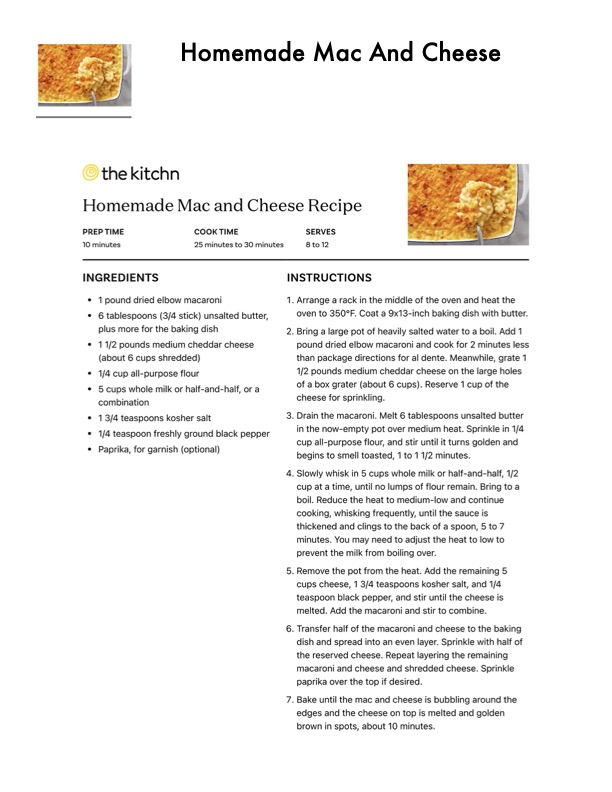

Homemade Mac And Cheese

Original cookbook page 814
Ingredients
- * 1 pound dried elbow macaroni
- * 6 tablespoons (3/4 stick) unsalted butter,
- plus more for the baking dish
- * 11/2 pounds medium cheddar cheese
- (about 6 cups shredded)
- * 1/4 cup all-purpose flour
- * 5 cups whole milk or half-and-half, or a
- combination
- * 13/4 teaspoons kosher salt
- * 1/4 teaspoon freshly ground black pepper
- * Paprika, for garnish (optional)
- Homemade Mac And Ct
- SERVES
- 8to12
Instructions
- Arrange a rack in the middle of the o oven to 350°F. Coat a 9x13-inch bak . Bring a large pot of heavily salted we pound dried elbow macaroni and cox 1/2 pounds medium cheddar cheese of a box grater (about 6 cups). Rese cheese for sprinkling. . Drain the macaroni. Melt 6 tablespoc in the now-empty pot over medium I cup all-purpose flour, and stir until it begins to smell toasted, 1 to 11/2 mi
- Slowly whisk in 5 cups whole milk or cup at a time, until no lumps of flour boil. Reduce the heat to medium-lov cooking, whisking frequently, until th thickened and clings to the back of < minutes. You may need to adjust the prevent the milk from boiling over. . Remove the pot from the heat. Add t cups cheese, 1 3/4 teaspoons koshe teaspoon black pepper, and stir until melted. Add the macaroni and stir to
- Transfer half of the macaroni and ch dish and spread into an even layer. S the reserved cheese. Repeat layerin: macaroni and cheese and shredded paprika over the top if desired. . Bake until the mac and cheese is bul edges and the cheese on top is melt brown in spots, about 10 minutes.
Recipe #814 from collection